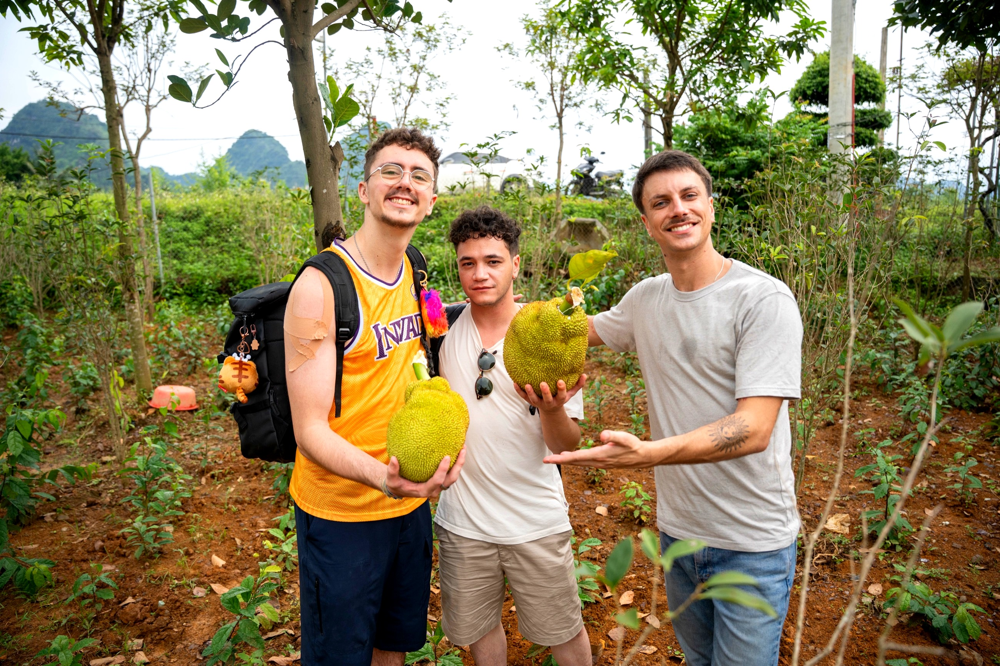
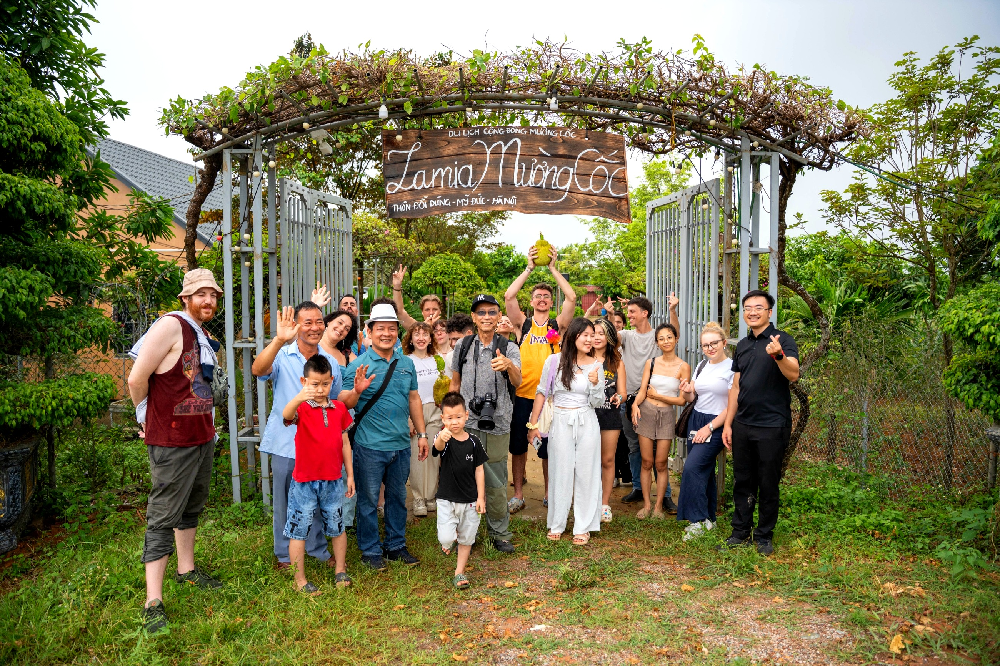
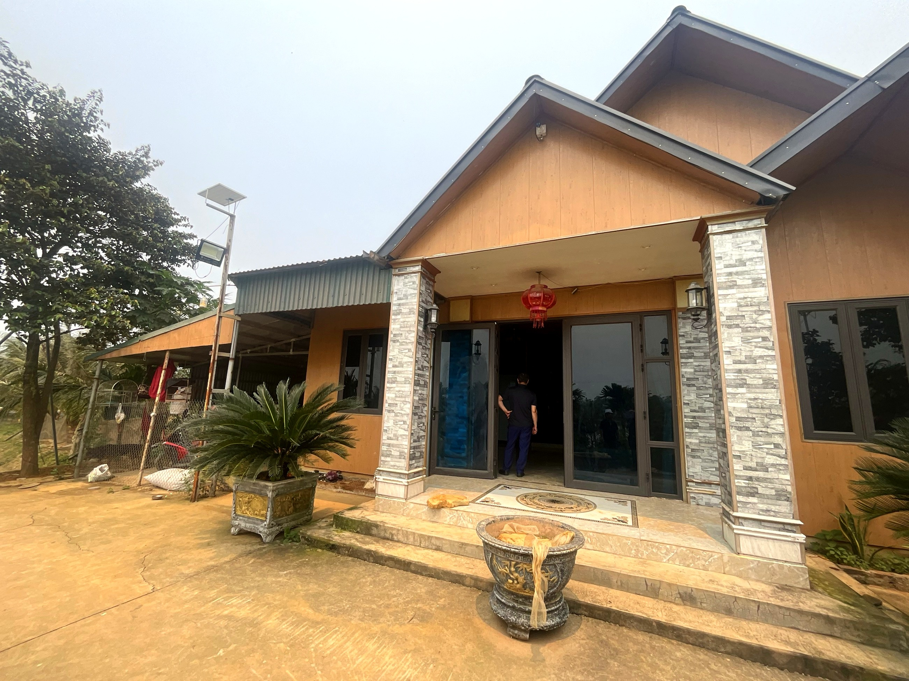

Loại hìnhTypeType
Trải nghiệm nông nghiệpAgricultural experiencesExpériences agricoles

Lamia Mường Cốc là không gian văn hóa Mường sống động, nơi nghề dệt cạp váy truyền thống vẫn được gìn giữ bên chiếc khung dệt gỗ thủ công. Tại đây, du khách được bước vào một không gian thuần Mường – từ bếp Mường ấm cúng, hương vị món ăn dân tộc đặc trưng, đến những tà váy cạp thêu hoa rực rỡ treo trong nhà.
Chủ nhà Thành Đạt không chỉ giữ nghề dệt mà còn tâm huyết chia sẻ với du khách về ý nghĩa của từng hoa văn trên cạp váy – mỗi họa tiết là một câu chuyện về bản sắc, tín ngưỡng và thẩm mỹ dân gian người Mường. Ngoài dệt vải, điểm còn có khu vườn yên tĩnh với những cây bonsai được chăm sóc kỳ công, và khoảng miệt vườn xanh mát để thư giãn sau hành trình.
Lamia Muong Coc is a vibrant Muong cultural space where the traditional craft of weaving skirt waistbands is preserved on handmade wooden looms. Here, visitors step into an authentic Muong environment – from the cozy Muong kitchen and the flavors of distinctive ethnic dishes to the brightly embroidered skirt waistbands hanging in the house.
Host Thanh Dat not only preserves the weaving craft but also passionately shares with visitors the meaning behind each pattern on the skirt waistband – every motif tells a story of Muong identity, beliefs, and folk aesthetics. Beyond weaving, the site also features a tranquil garden with meticulously cared-for bonsai trees and a lush orchard for relaxing after your journey.
Lamia Mường Cốc est un espace culturel Mường vivant, où l'artisanat traditionnel du tissage de jupes est préservé sur des métiers à tisser en bois faits à la main. Ici, les visiteurs entrent dans un espace purement Mường – de la cuisine Mường chaleureuse, aux saveurs des plats ethniques typiques, jusqu'aux jupes à ceinture brodées de fleurs éclatantes suspendues dans la maison.
L'hôte Thanh Dat ne se contente pas de préserver l'art du tissage, il partage aussi avec passion aux visiteurs la signification de chaque motif sur la ceinture de la jupe – chaque motif raconte une histoire de l'identité, des croyances et de l'esthétique populaire Muong. Outre le tissage, le site dispose également d'un jardin tranquille avec des bonsaïs méticuleusement entretenus, et d'un verger verdoyant pour se détendre après votre voyage.
| Trải nghiệm dệt cạp váyExperience traditional skirt weavingExpérience de tissage de jupes traditionnelles | Hướng dẫn thực hành trên khung dệt gỗ truyền thốngHands-on instruction on traditional wooden loomsInstructions pratiques sur les métiers à tisser en bois traditionnels |
| Tham quan bếp MườngExplore a Traditional Muong KitchenDécouvrez une cuisine Muong traditionnelle | Tìm hiểu không gian bếp và văn hóa ẩm thực dân tộcExplore the kitchen space and discover ethnic culinary culture.Explorez l'espace cuisine et découvrez la culture culinaire ethnique. |
| Mặc thử trang phục MườngTry on traditional Muong attireEssayez les tenues traditionnelles Mường | Trải nghiệm và chụp ảnh cùng trang phục truyền thốngTry on vibrant traditional costumes and capture memorable photos.Essayez de magnifiques costumes traditionnels et immortalisez des photos mémorables. |
| Ẩm thực dân tộcEthnic cuisineCuisine ethnique | Các món ăn người Mường, phục vụ theo đặt trướcMuong dishes, served by prior arrangement.Plats Muong, servis sur réservation. |
| Tham quan vườn – bonsaiExplore the garden – bonsai collectionExplorez le jardin – collection de bonsaïs | Thăm quan khu vườn và khu trưng bày bonsaiVisit the garden and bonsai exhibition area.Visitez le jardin et l'espace d'exposition de bonsaïs. |
| Trải nghiệm miệt vườnExplore the lush fruit gardens.Découvrez la vie au verger. | Thư giãn, tìm hiểu nông sản theo mùaRelax and discover seasonal produceDétendez-vous et découvrez les produits agricoles de saison |


Lamia Mường Cốc hướng tới trở thành trung tâm trải nghiệm văn hóa thủ công Mường tiêu biểu của khu vực, nơi nghề dệt cạp váy được trao truyền đến thế hệ trẻ và du khách. Chủ nhà mong muốn xây dựng thêm không gian học dệt ngắn hạn dành cho học sinh và du khách yêu thích thủ công truyền thống, đồng thời kết hợp với ẩm thực và vườn cảnh để tạo trải nghiệm trọn vẹn mang bản sắc Mường Cốc. Điểm đến Du lịch cộng đồng Mường Cốc, Xã Mỹ Đức – Thành phố Hà NộiLamia Mường Cốc aims to become a quintessential Mường handicraft cultural experience center in the region, where the art of skirt waistband weaving is passed down to younger generations and visitors. The hosts wish to build additional short-term weaving workshops for students and visitors passionate about traditional crafts, while also combining it with cuisine and a scenic garden to create a complete experience embodying the Mường Cốc identity. A Mường Cốc Community Tourism Destination, My Duc Commune – Hanoi City.Lamia Mường Cốc vise à devenir un centre d'expérience culturelle artisanale Mường emblématique de la région, où l'art du tissage de la ceinture de jupe est transmis aux jeunes générations et aux visiteurs. Les hôtes souhaitent construire des ateliers de tissage de courte durée supplémentaires pour les élèves et les visiteurs passionnés par l'artisanat traditionnel, tout en combinant cela avec la gastronomie et un jardin paysager pour créer une expérience complète incarnant l'identité de Mường Cốc. Une destination de tourisme communautaire de Mường Cốc, commune de My Duc – ville de Hanoi.